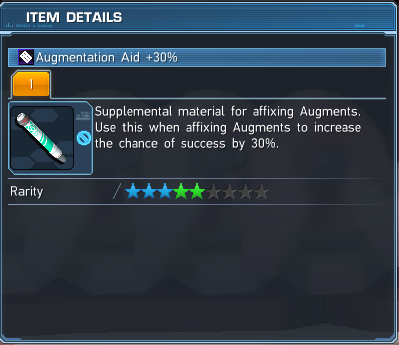

Budget Ranged Build
Cost: ~10 million meseta (As of 2020-11-22)
Stats this build will give: +40 Melee power, +115 Range power, +40 Tech power, +35 HP, +9 PP
DISCALIMER: I AM NOT LIABLE FOR ANY MISTAKES MADE DURING AFFIXING
IMPORTANT Terms to Remember in this guide:
Affixing: The process of modifying, adding or removing augments.
Augments: These are your "enchantments" or "modifiers". They help increase stats on weapons and units.
Augmentation Aides: These are success boosters to help increase the chances during affixing. They are easily obtainable by trading Ex-cubes at the Ex-Cube swap shop on the 2nd floor of the shopping plaza.
Base: This is the foundation of everything, and the unit/weapon that the augments will be affixed onto. This whole build will end up here.
Fodder: Units or Weapons that contain augments to help affix your base.
Slots: How many AUGMENTS an unit or weapon contains.
Materials Required to make this build:
(3x) Precision III Units at 4 slots. Drops with units (rarely). Buy from player shop.
(1x) Mutation II Unit at 4 slots. Buy from player shop.

(1x) Precision IV Unit at 4 slots. Buy from player shop.
(1x) Bar soul (Ringa Soul, Vol Soul, or any Field Boss Soul works) Unit at 4 slots. Dropped from Bar Lodos, this guy shows up commonly in Floating Facility explorations and advanced quests or buy from player shop.

(1x) Doom Break I with Fullvegas Soul (Eastern Soul or Escarde Soul works as well) Unit at 4 slots. Farmed in Tokyo or Los Vegas Explorations (dropped from the boss "Laplace") or buy from player shop.

(2x) Doom Break I Unit at 4 slots. Farmed in Tokyo or Las Vegas Explorations (dropped from the boss "Laplace").

(1x) Augment (Ranged & PP/2) also known as Elegant Precision. From AC scratches and player shop.
(1x) Augmentation Aid +30%. From the Ex-Cube swap shop, Weekly Arks Missions, Daily Log-In rewards, and Episode 5 Story Missions.
(1x) Augmentation Aid +40%. From the Ex-Cube swap shop, Daily Log-In rewards, and Episode 5 Story Missions.

Step 1: Downslotting your base to 4 slots.
In-depth Upslotting/Downslotting page here.
1. If your unit is at 4 slots already, go to Step 3. If your unit is 3 slots or less, go to Step 2. If your base unit is 5 slots or more, go grab a junk unit with the same amount or more slots as your base unit.
2. Go to Dudu/Monica, and select "Affix Augment".
3. First select your base unit, and then the junk unit.
4. Click "Confirm" and if there is a pop up saying "You have a support item that certain Augments can be affixed to. Choose the one you wish to use", choose "Don't Use".
5. Select the same amount of augments as your base unit that have LOW success rates, and click "Start Affix Augment".
6. Now click "Yes", and unless you are very lucky at the wrong times, you can move on to Step 2. If your unit is still 5 slots or more, repeat 1-5
Step 2: Upslotting your base to 4 slots.
1. If your unit is at 4 slots already, go to Step 3. If your base unit is 3 slots or less, get 2 junk units with the same amount of slots or more as your unit.
2. Go to Dudu/Monica, and select "Affix Augment".
3. Now select your base unit first, and then select the 2 junk units.
4. Click "Confirm" and if there is a pop up saying "You have a support item that certain Augments can be affixed to. Choose the one you wish to use", choose "Don't Use".
5. Select the same amount of augments with an extra augment that has HIGH chances of success to upslot your unit, and click "Start Affix Augment".
6. Now under "Success Boosters" click the "Don't Use" dropdown and select the Success Booster (Augmentation Aid) you would like to use (I suggest using an Augment Aid +30), and click "Yes" after you have done so.
7. Now pray that everything succeeds if they are not all at 100% for success.
8. Repeat 1-7 until your base unit is at 4 slots.
Step 3: Affixing Might 4 onto your base unit.
1. Take your base unit at 4 slots, the (3x) Precision III 4 slot units, and the Mutation II 4 slot unit to Dudu/Monica
2. Select "Affix Augment", first select your base unit, then the (3x) Precision III 4 slot units, and the Mutation II 4 slot unit
3. Click "Confirm" and if there is a pop up saying "You have a support item that certain Augments can be affixed to. Choose the one you wish to use", choose "Don't Use".
4. Select Precision IV, and 3 other augments that have at least 70% chance for success and click "Start Affix Augment".
5. Now under "Success Boosters" click the "Don't Use" dropdown and select the Augmentation Aid +30%, and click "Yes" after you have done so.
Step 4: Making the final product.
1. Take your base unit at 4 slots and the following fodder to Dudu/Monica. I have provided a handy checklist.
-(1x) Precision IV 4 slot unit
-(1x) Bar Soul 4 slot unit
-(1x) Doom Break I with Fullvegas Soul 4 slot unit
-(2x) Doom Break I 4 slot units
-(1x) Augment (Ranged & PP/2)
-(1x) Augmentation Aid +30%
2. Select "Affix Augment", first select your base unit, then select the Might IV 4 slot units, Bar soul 4 slot unit, Doom Break I with Fullvegas Soul 4 slot unit, and (2x) Doom Break I 4 slot units.
3. Click "Confirm" and there should be a pop up saying "You have a support item that certain Augments can be affixed to. Choose the one you wish to use", choose "Augment (Melee & PP/2)".
4. Select Precision 4, Allies Di Soul, Doom Break 1 and Elegant Precision (This might be already selected for you) then click "Start Affix Augment".
5. Now under "Success Boosters" click the "Don't Use" dropdown and select the Augmentation Aid +40%, and click "Yes" after you have done so.
6. Enjoy your newly affixed 4 slot unit! BEST OF LUCK ARKS OPERATIVE!
Things to Think About
-Maybe switch out Precision IV for Precision III to save meseta?
-Maybe switch out Doom Break I for Doom Break II?
-Maybe use Tir Di Soul instead of Allies Di Soul for 10 more Range attack at the cost of 10 less Melee attack, 10 less Tech attack, and 35 less HP?
-If you cannot afford it, maybe farm for the fodder?